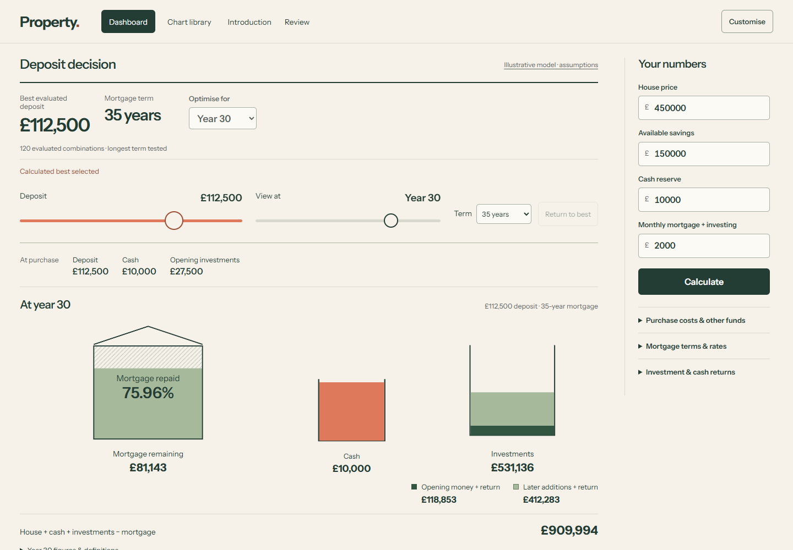
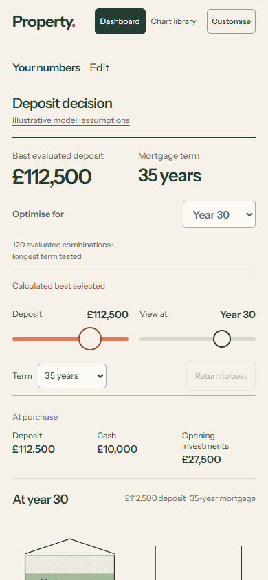
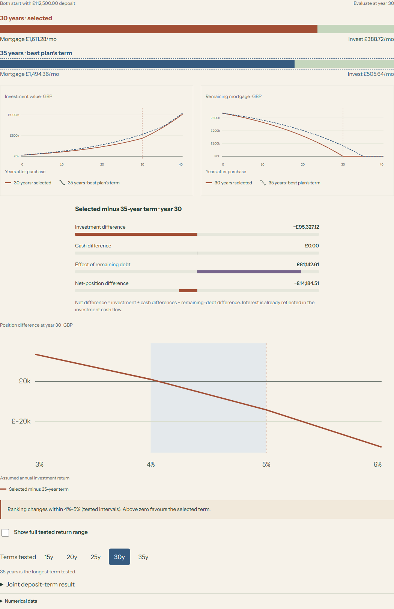
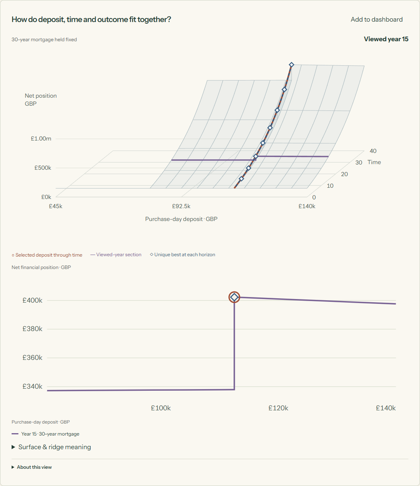

R4-v3 review
Connected deposit and time exploration, automatic comparison with the calculated best, and clearer term, rate-path and overpayment views.
Ready for owner visual review. New draft PR; no merge. Owner visual acceptance is pending.
Dashboard




What changed
| R4-v2 | R4-v3 |
|---|---|
| Deposit interaction is concentrated around the opening illustration. | Shared deposit and viewed-date controls stay available through lower views. |
| Opening allocation leads; timeline inspection is separate. | Purchase-day allocation and the viewed-date house, investment cohorts and cash use the same selection. |
| A manual pin is needed for several comparisons. | Calculated best is the default reference; the selected term persists as the deposit moves. |
| Term ranking mainly shows which outcome is higher. | Equal-deposit monthly funding, investments, remaining debt and a return crossing explain the difference. |
| 26 views include repeated controls and closely related charts. | 20 retained views consolidate six overlaps; the full predecessor mapping remains available. |
| One later-rate reset, flat overpayment fields and a wire projection. | Renewal-aware rate paths, dated overpayment schedules and a labelled fixed-term surface with a 2D fallback. |
All 26 previous views mapped to the 20 current views.




Ordinary-use recordings
Separate desktop and phone-emulation journeys, shown at their original recorded speed. The phone recording is browser emulation, not a physical-device test.
Model boundaries
All financial values come from the isolated Python Decimal provider. The result is the best evaluated deposit–term combination under the entered assumptions, not a proven global optimum or a mortgage-product recommendation. Cash, investment sources, monthly funding and remaining debt stay explicit.
Investment paths are deterministic assumptions without probabilities. Rates are illustrative; tax/LISA eligibility, inflation, investment fees, changing house prices and lender-specific affordability or arrears forecasts are outside scope. Unfunded paths cannot be ranked as feasible. Full model and state contract.
Verification
| Check | Result | Scope |
|---|---|---|
| Exploratory Python model | Passed · 46 | Independent high-precision references, conservation, boundaries and schedule search. |
| JavaScript state tests | Passed · 17 | Selection, horizon, stale results and applied-option isolation. |
| Production backend regression suite | Passed · 4,730 | One clean full run; two optional-PyYAML warnings. Production source unchanged. |
| Ruff | Passed | Required backend lint. |
| Strict mypy | Passed · 53 | Strict backend type checking. |
| Browser worker / CPython parity | Passed · 15 | Every complete response equals CPython, including Decimal strings. |
| Browser, layout and accessibility | Passed | Desktop and 320/390px journeys; 40 retained-chart captures; axe; keyboard; trusted emulated touch; rapid input; reduced motion; 12 normal/200% text layouts. |
| Hosted assets and links | Recorded separately | Exact deployed hashes, links, live browser checks and Pages receipt are recorded separately in the linked source PUBLICATION.md. |
Only recorded passes are labelled passed. Local tests, browser checks and hosted verification are separate evidence. Counts and identities are regenerated from the publication input.
Not performed: Physical-device testing; Safari and Firefox testing; Novice-comprehension testing; Spoken screen-reader testing.
Source and publication
- Recorded application source
488ffa1493b71003c92505bea698388f2d2eaa77- Tested source
488ffa1493b71003c92505bea698388f2d2eaa77- Review wrapper
- Publication receipt · Exact deployment record
- Public assets
- Publication receipt · Exact deployment record
- Pages deployment
- Publication receipt · Exact deployment record
- Draft pull request
- Draft PR #30
Hosted verification and exact deployment · Structured review record · Publication receipt and exact hosted identity. R4-v2 and the previous review remain preserved.